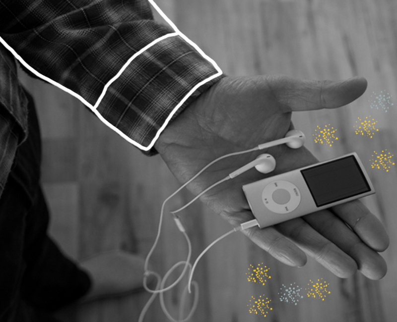
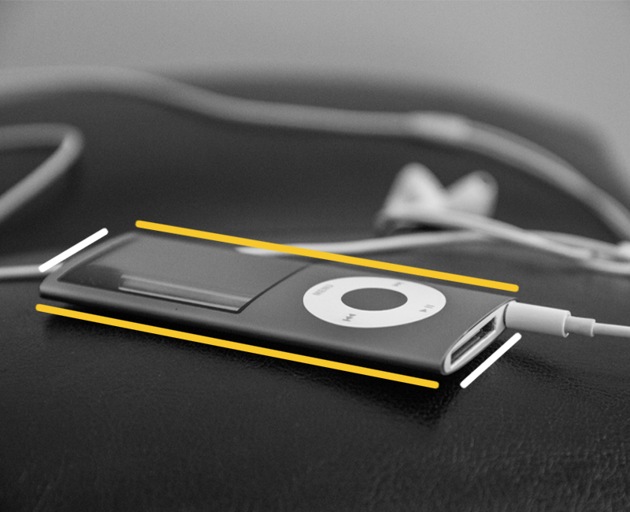
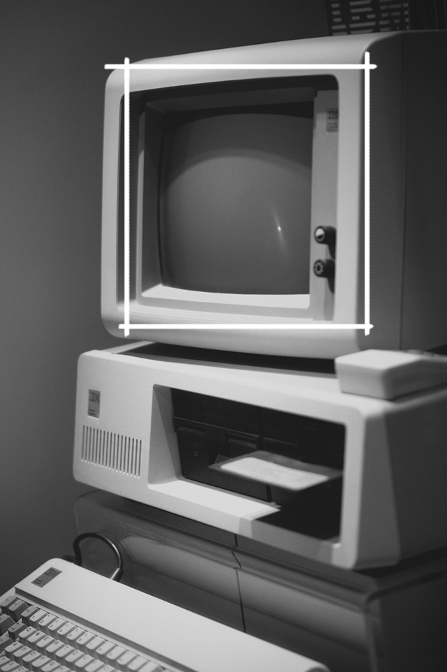

70s
What would the 70s look like if iPods first came out?

Users in the 70s would have the chance to have their music easily accessible in one device. Individuals would have to purchase separate iPods per artist. Each artist would get updated yearly; adding new songs and to be re-purchased if you wanted to keep up-to-date.

iPods would be very simple and only have a couple of features. Individuals can find a list of songs from the artist and would be able to skip, pause and play songs with separate buttons.
The charging life on the iPod would only last up to 2 hours before having to re-charge it again. Headphones need to be purchased separately.
iPods are small enough to fit into your pocket without having to clip it on yourself.

In 1975, the first “personal computer” was introduced. Individuals would not be able to personally download their own music to their iPods but could purchase the iPods pre-downloaded. The only iPods that would be available for purchase in the 70s is the iPod Classic and the iPod Mini. With no new upgrades to the iPod itself but only the songs.